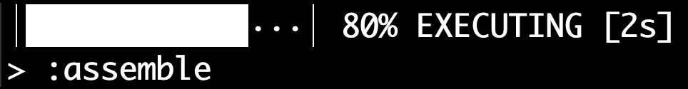
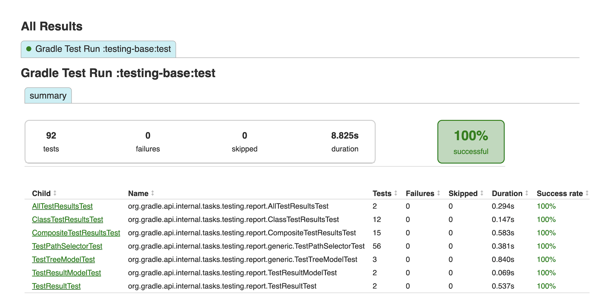
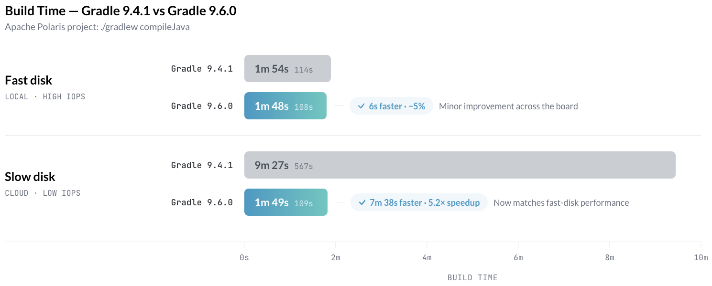

We are excited to announce Gradle 9.6.0 (released 2026-06-18).
This release improves Configuration Cache hit rates by precisely tracking project properties supplied through system properties and environment variables.
The CLI, logging, and problem reporting gains a --non-interactive option to disable interactive prompts when running Gradle in automated environments, support for the NO_COLOR environment variable to suppress color output, and sortable columns in HTML test reports.
Build authoring includes an important deprecation: implicit property and method lookup in parent projects now emits a warning and will be removed in Gradle 10. A new NO_IMPLICIT_LOOKUP_IN_PARENT_PROJECTS feature preview lets you adopt the Gradle 10 behavior early once related deprecations are addressed.
Plugin authors get clearer validation errors when the @Optional annotation is misused on task properties.
Finally, security and infrastructure improvements reduce IO load from Gradle's file-based journals, delivering significant performance gains on low-IOPS storage typical of cloud CI runners.
We would like to thank the following community members for their contributions to this release of Gradle: Aharnish Solanki, Benedikt Johannes, Devendra Reddy Pennabadi, Dmytro Rodionov, Dreeam, Elías Hernández Rodríguez, Eng Zer Jun, FinlayRJW, Kamal Kansal, Marcono1234, Nelson Osacky, Philip Wedemann, Ravi, Roberto Perez Alcolea, Ryan Schmitt, Sebastian Schuberth, seunghun.ham, sk-reddy17, Suvrat Acharya, Vedant Madane.
Be sure to check out the public roadmap for insight into what's planned for future releases.
Switch your build to use Gradle 9.6.0 by updating the wrapper in your project:
./gradlew :wrapper --gradle-version=9.6.0 && ./gradlew :wrapper
See the Gradle 9.x upgrade guide to learn about deprecations, breaking changes, and other considerations when upgrading to Gradle 9.6.0.
For Java, Groovy, Kotlin, and Android compatibility, see the full compatibility notes.
Gradle provides a Configuration Cache that improves build time by caching the result of the configuration phase and reusing it for subsequent builds.
Project properties can be supplied not only on the command line with -P or in gradle.properties files, but also through org.gradle.project.<name> system properties and ORG_GRADLE_PROJECT_<name> environment variables.
Previously, changing any such system property or environment variable invalidated the Configuration Cache, even if the affected project property was never used during the configuration phase.
Consider the following Kotlin DSL example:
tasks.register("printValue") {
val value = providers.gradleProperty("value").orElse("N/A")
doLast {
println("value: ${value.get()}")
}
}
Previous versions of Gradle were unable to reuse the cache entry when re-running with a different value passed via a system property or environment variable:
$ ./gradlew --configuration-cache printValue -Dorg.gradle.project.value=1
Calculating task graph as configuration cache cannot be reused because the set of system properties prefixed by 'org.gradle.project.' has changed: 'org.gradle.project.value' was added.
> Task :printValue
value: 1
...
Configuration cache entry stored.
In this release, Gradle detects that the value property is never read during the configuration phase and reuses the existing cache entry, regardless of how the property was supplied:
$ ./gradlew --configuration-cache printValue -Dorg.gradle.project.value=2
Reusing configuration cache.
> Task :printValue
value: 2
...
Configuration cache entry reused.
The same precise tracking now also applies to ORG_GRADLE_PROJECT_* environment variables, bringing parity with the improvements introduced for -P properties in Gradle 9.1.0 and for gradle.properties files in Gradle 9.4.0. The existing cache entry is reused even when the property is supplied through an environment variable:
$ ORG_GRADLE_PROJECT_value=3 ./gradlew --configuration-cache printValue
Reusing configuration cache.
> Task :printValue
value: 3
...
Configuration cache entry reused.
For builds that pass many project properties on the command line or via environment variables, particularly in CI, this change will significantly improve cache hit rates.
See the Reading System Properties and Environment Variables section in the Gradle User Manual for more information.
Gradle provides an intuitive command-line interface, detailed logs, and a structured problems report that helps developers quickly identify and resolve build issues.
Gradle now supports a --non-interactive command-line option to disable all interactive console prompting. This is useful for running Gradle in automated environments such as CI pipelines, scripts, and AI agents where no user input is available.
See the Non-interactive mode section in the Gradle User Manual for more information.
Gradle now honors the NO_COLOR environment variable following the no-color.org convention. When NO_COLOR is set and non-empty, Gradle suppresses color output while preserving other styling (bold, underline) and rich features (progress bars, animations).

See the Environment variables section in the Gradle User Manual for more information.
The HTML test report generated by the Test task now supports sorting by clicking column headers.
Clicking a column header sorts rows by that column. A second click reverses the direction, and a third click restores the original order.
Numeric columns (Tests, Failures, Skipped, Duration) default to descending on first click so the most interesting values surface first. Success rate defaults to ascending so flaky or broken classes appear at the top.

This makes it easier to identify problematic test classes in large projects without manually scanning through the report.
See the Test reporting section in the Gradle User Manual for more information.
Gradle provides rich APIs for build engineers and plugin authors, enabling the creation of custom, reusable build logic and better maintainability.
In Gradle's Groovy DSL, when a child project's build script references a property or method that isn't defined locally, the resolution mechanism walks up the parent projects looking for a match. For example:
// build.gradle (root project)
ext.foo = "hello"
// child/build.gradle
println(foo) // Resolved through parent projects — now deprecated
This behavior is not unique to Groovy DSL, as this inherently comes from how findProperty() and related methods work. However, such implicit inheritance creates hidden coupling between projects and makes builds harder to reason about (a typo silently resolves to an ancestor's definition instead of failing).
Starting in Gradle 9.6.0, both implicit references and explicit APIs (findProperty(), property(), hasProperty()) emit a deprecation warning when they get resolved from parent projects. This behavior will be removed in Gradle 10.
See the upgrade guide for migration paths, including gradle.properties, convention plugins, and explicit references.
Once you have addressed all related deprecations, you can enable the new NO_IMPLICIT_LOOKUP_IN_PARENT_PROJECTS feature preview to adopt the Gradle 10 behavior early.
This prevents new accidental implicit lookups from parent projects:
// settings.gradle[.kts]
enableFeaturePreview("NO_IMPLICIT_LOOKUP_IN_PARENT_PROJECTS")
Gradle's lazy property types (Property<T>, ListProperty<T>, SetProperty<T>) previously required exact type matches when assigning values in the Groovy DSL. This meant that common idioms that worked with eager properties would fail with IllegalArgumentException when a plugin author migrated to lazy properties.
Gradle now automatically coerces values in the following cases:
String to File: A String assigned to a Property<File>, RegularFileProperty, or DirectoryProperty is resolved relative to the project directory:
task.workingDir = '../my-build'
Single value to collection: A single T or T[] assigned to a ListProperty<T> or SetProperty<T> is wrapped into a one-element collection:
task.filter.includePatterns = 'Foo'
task.filter.includePatterns = ['Foo', 'Bar'] as String[]
These coercions bring the Groovy DSL experience for lazy properties closer to what users expect from eager properties, making it easier for plugin authors to migrate to the lazy configuration API without breaking their users' build scripts.
Gradle provides a comprehensive plugin system, including built-in Core Plugins for standard tasks and powerful APIs for creating custom plugins.
@Optional annotation misuseThe validatePlugins task now produces more specific error messages when the @Optional annotation is used incorrectly on task properties.
If a property is annotated with only @Optional and no input or output annotation, Gradle explains that @Optional is a modifier annotation with no effect on its own:
Type 'MyTask' property 'badProperty' is missing an input or output annotation.
Reason: @Optional is a modifier annotation and has no effect without an input or output annotation.
Possible solutions:
1. Add an input or output annotation.
2. Replace @Optional with @Internal for ignoring this property.
Similarly, combining @Internal with @Optional now produces a dedicated error explaining that @Optional is redundant on properties excluded from up-to-date checks:
Type 'MyTask' property 'badProperty' annotated with @Internal should not be also annotated with @Optional.
Reason: @Internal properties are excluded from up-to-date checks; @Optional is redundant and not allowed here.
See the Validating plugins section in the Gradle User Manual for more information.
Gradle provides robust security features and underlying infrastructure to ensure that builds are secure, reproducible, and easy to maintain.
Gradle uses several file-based journals to track operations.
Through community feedback and our own analysis, we confirmed that the implementation used in Gradle was generating a high volume of I/O operations. On storage with limited IOPS, typical in cloud environments using network-attached block storage such as AWS EBS, this led to I/O throttling and significant slowdowns during disk-heavy operations.
With this release, the implementation has been improved, resulting in significant performance gains on low IOPS storage and minor improvements across the board:

Promoted features are features that were incubating in previous versions of Gradle but are now supported and subject to backward compatibility. See the User Manual section on the "Feature Lifecycle" for more information.
The following are the features that have been promoted in this Gradle release.
getNetworkTimeout() in WrapperThe User Manual gained two significant additions in this release:
The Gradle on CI section returns with refreshed guidance for running Gradle in continuous integration environments, including dedicated pages for GitHub Actions, Jenkins, TeamCity, GitLab CI, CircleCI, Travis CI, and Docker.
The Best Practices catalog grew with two new entries:
afterEvaluate — explains why the callback creates ordering problems and what to use instead.Known issues are problems that were discovered post-release that are directly related to changes made in this release.
We love getting contributions from the Gradle community. For information on contributing, please see gradle.org/contribute.
If you find a problem with this release, please file a bug on GitHub Issues adhering to our issue guidelines. If you're not sure if you're encountering a bug, please use the forum.
We hope you will build happiness with Gradle, and we look forward to your feedback via Twitter or on GitHub.